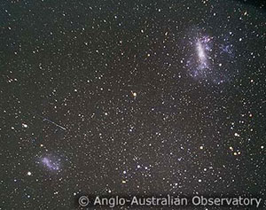
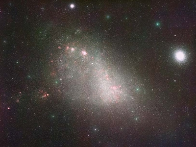

|

The Magellanic Clouds. The Large Magellanic Cloud is top right, the Small Magellanic Cloud bottom left.
Credit: AAO |

The Small Magellanic Cloud.
Credit: David Malin, Anglo-Australian Obs./Royal Obs. Edinburgh |
Visible to the naked eye from the southern hemisphere, the Small Magellanic Cloud (SMC) is the smaller of the two irregular galaxies that make up the Magellanic Clouds. These two galaxies orbit the Milky Way once every 1,500 million years, and each other once every 900 million years.
Located 200,000 light years away, the SMC has a mass of approximately 3 billion solar masses. Some observations suggest that it might be a barred disk galaxy, deformed by gravitational interactions with the Milky Way and the Large Magellanic Cloud (LMC). The existence of the Magellanic Stream, a tidal tail of gas that has been stripped from the SMC/LMC system and now extends half way around the Milky Way, provides further evidence for interactions between these three galaxies.
It was while studying variable stars in the Small Magellanic Cloud that Henrietta Leavitt discovered the period-luminosity of Cepheid variable stars. This has become one of the most important relations in determining distances to objects in the Universe, and forms the first rung of the extragalactic distance ladder.